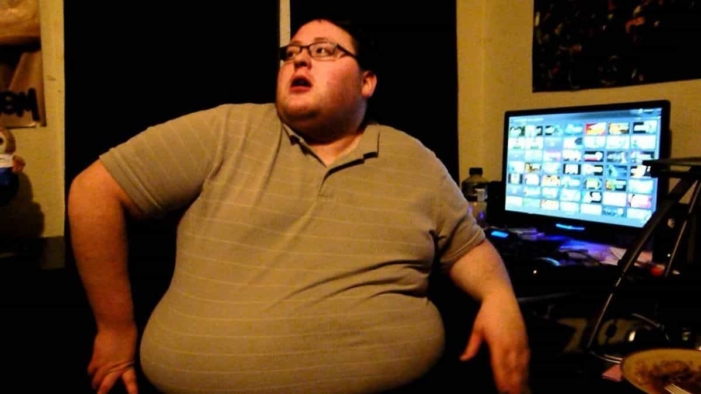

< < < Back
Why Shaming Men (And Women) Is Important And Necessary – Return Of Kings
One of the most unfortunate similarities the manosphere—or at least certain portions of it—has in common with social justice warriors is a fanatical opposition to “shaming.” Feminists hate it when women are “fat-shamed” or “slut-shamed,” and MRAs and “migtows” dismiss any and all criticism of their beliefs as “shaming language.” For example, a gang of angry virgins denounced my MGTOW article last week by claiming I was trying to “shame” men into getting married.
The “anti-shaming” current in the manosphere has reached the point where r/TheRedPill recently ordered participants to “keep [their] damn morals to [themselves]” after a slew of posters objected to men asking for advice on seducing married women. In doing this, r/TheRedPill has become the manosphere’s equivalent of Tumblr: a gang of special little snowflakes screeching “YOU CAN’T JUDGE ME FOR CUCKING OTHER MEN, YOU TRADCON SHITLORD!”
Shaming of immoral, unmanly, or unfeminine behavior is a necessary component of a stable society. A world that says you can’t judge people for behaving like losers or failures is one that will inevitably regress to the lowest common denominator. It’s the world we happen to live in, where kids are given participation trophies no matter how badly they suck at the game and where an old fart deep in his dotage is called “courageous” for cross-dressing and calling himself “Caitlyn.”
Shame Is Personal
The most important thing you have to understand about shame is that at the end of the day, the only person who can make you feel shame is you. While you may be insulted by someone else’s words or comments, if you feel shamed, it’s because those comments cut deep and reveal an inadequacy within you. If there isn’t some truth to the shaming attempt, all the put-downs in the world won’t affect you at all.
For example, feminists could try to shame me by saying that I live in my parents’ basement, but it wouldn’t affect me because it’s not true (my rental lease and credit report being evidence that it’s not true). Conversely, the reason why so many “migtows” became angry at my cracks about them being basement-dwelling virgins is because a great many of them are basement-dwelling virgins, and all I did was point out the truth.
Additionally, if you feel shamed over something, it’s an indicator that whatever you’re being shamed for is something you hate about yourself and want to change. For example, while a devout Christian may retain his virginity until he gets married, because he’s choosing to save himself for a higher cause, attempting to shame him for not having sex wouldn’t work. On the other hand, shaming “migtows” for being virgins is incredibly effective, because despite their claims, their inability to attract women makes them feel inferior to men who can.
Stop Acting Shamefully

Just because feminists abuse shaming in their attempts to manipulate men doesn’t mean that shaming itself is bad. Not all life choices are equal. For example, being fat is not the same as being skinny—contra the belching of “fat acceptance” activists—because not only is being fat unhealthy, fat women are physically repulsive.
No amount of agita against “fat shaming” will change this fundamental reality. The same goes for slut-shaming: girls who sleep around make worse wives and mothers than those who remain chaste.
Your worth as a man is determined by what accomplishments you’ve made and what skills you have. If you’ve accomplished nothing—indeed, try to act as if you’re proud of accomplishing nothing—you will be mocked, jeered at and disrespected by men (and women) who matter. When you try and retaliate by claiming they’re “shaming” you, you’re basically saying, “Yeah, I’m a loser, but you need to ACCEPT that I’m a loser.”
While nobody can force you to live your life a certain way, you can’t sit in your basement all day twiddling your fleshy bits to hentai and expect the same measure of respect as a man who actually accomplishes something real. Yet much in the same way that fat girls demand to be given the same deference as skinny ones, loser men in the manosphere—and moral degenerates who steal other men’s wives—demand to be treated the same as men of virtue.
The reality is that if you’re being shamed, you probably deserve it. If you’re unwilling to own the consequences of your behavior, you need to change the way you act. In other words, if you’re sick of being shamed, you should stop acting shamefully. Demanding that the rest of the world change to accommodate your failures makes you no different than a spiky-haired Tumblrina crying about how she was born with the soul of a naked mole rat and why won’t you accept her for who she is, you cishetwhitemale asshole?
At the end of the day, choices have consequences. You’re free to carve out whatever life you see fit, but I’m also free to mock you for it if your life choices are stupid. “Shaming language” is just an attempt to de-legitimize any criticism of anyone who chooses mediocrity over greatness, failure over success.
Read More: A New Study Claims That Fat Shaming Doesn’t Work